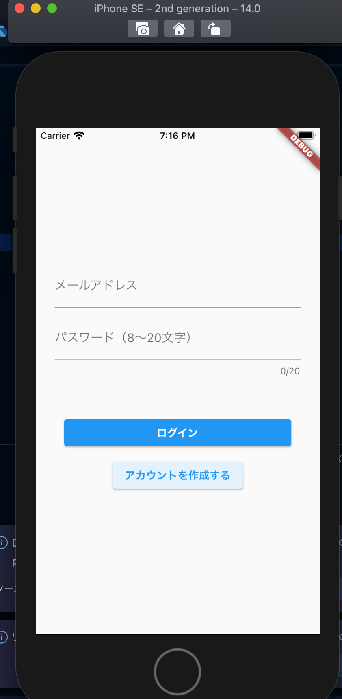
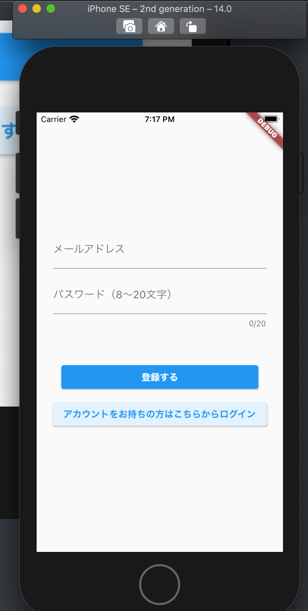
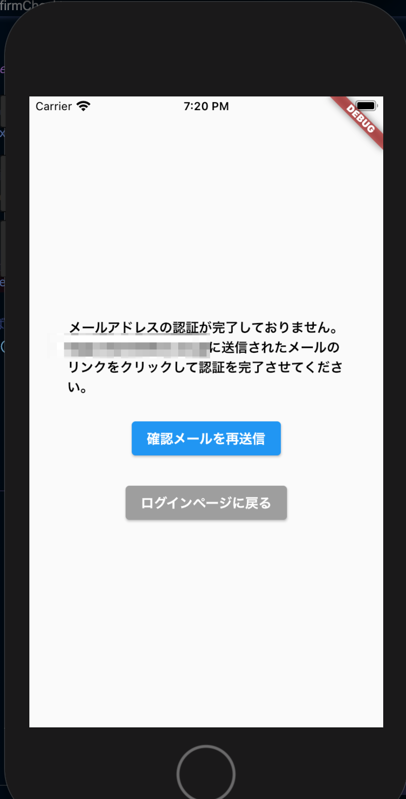
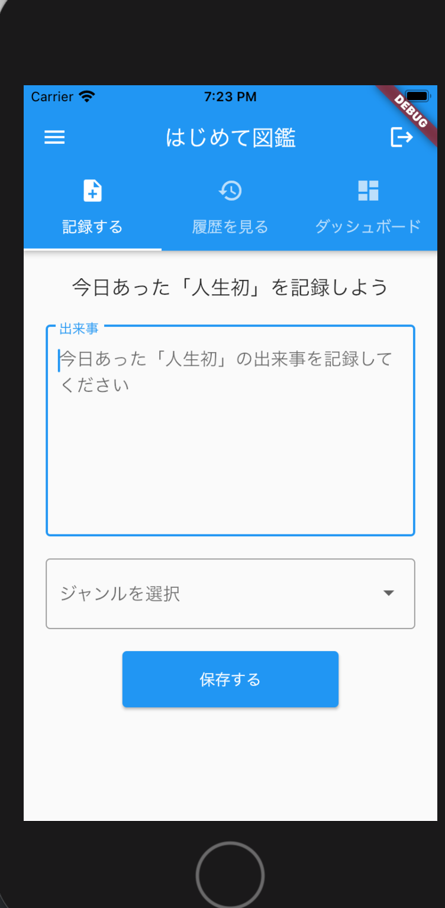
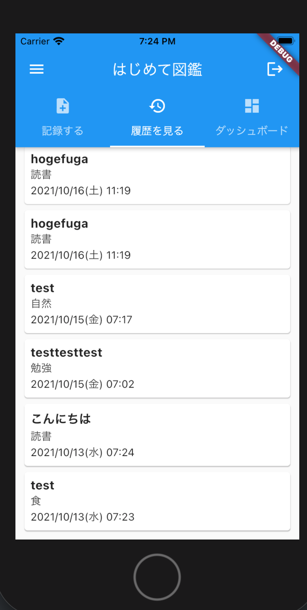
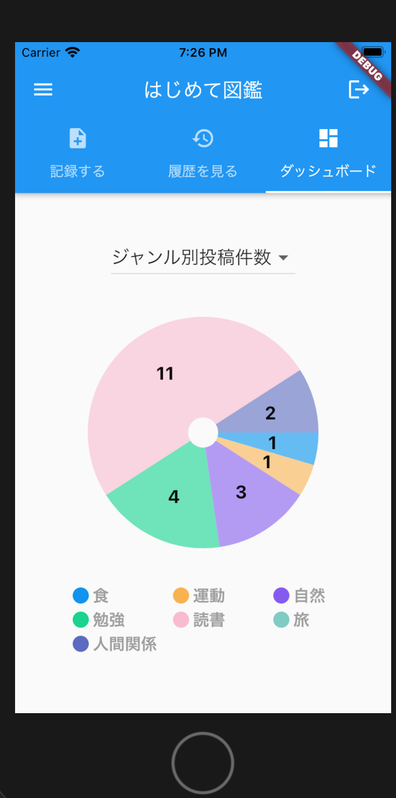
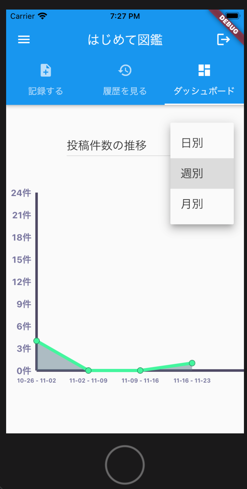

Android/iOSアプリの「はじめて図鑑」の使い方を紹介するページです
「人生で初めて〇〇した」取り組みを記録していくアプリです。 何気なく過ごしているとついルーティン化してしまいがちな日常に「初めて」起こった出来事を記録していくことで日常に彩りを与えることを目指しています。
以下の本をベースにしています。
https://amzn.to/3kXnaaA


あなたの「人生初」の取り組みを記録します。「出来事」欄に出来事を、ジャンルをプルダウンから選択して送信してください。

タブメニューの「履歴を見る」をタップすると、投稿したメモの一覧が新しい順で見れます。

タブメニューから「ダッシュボード」を選択するとジャンル別の投稿件数、および期間別の投稿件数を確認いただけます。画面上部のプルダウンからグラフを切り替えられます。

期間別のグラフは「日別・週別・月別」から選ぶことができます。
